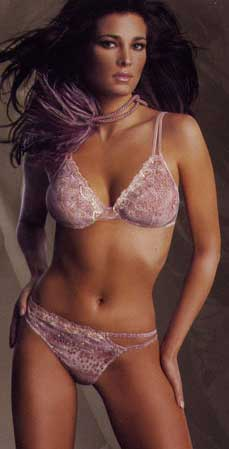
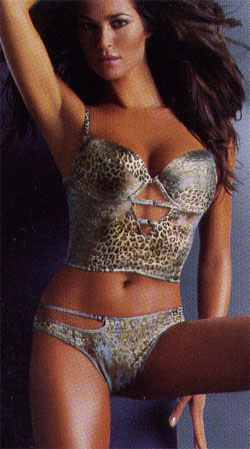

|
Введение
| |||||||||||
 |
Корсетные
изделия
всегда занимали важное
место в гардеробе каждой женщины и потребность в них никогда не отпадала,
поэтому изучение данного ассортимента является актуальным. Особенность корсетных изделий заключается в том, что они должны не только копировать внешнюю форму фигуры человека, но и моделировать фигуру, создавая желаемый силуэт. Корсетные изделия оказывают существенное влияние на здоровье и являются своеобразным каркасом для лучшей посадки на фигуре других видов женской одежды. Кроме корсетных изделий, отдельно выделяются корсеты, как самостоятельный элемент гардероба женщины. Они снова вошли в моду и присутствуют вот уже не один год в коллекциях многих дизайнеров. Проектирование относительно небольших по размерам, но сложных по форме корсетных изделий, нуждается в постоянном совершенствовании. |
 |
|||||||||
Предмет
"Проектирование корсетных изделий" составлен на основе дидактического
синтеза, т. е. интеграции материала из разных специальных дисциплин по данному
ассортименту. Электронный учебник включает в себя следующие разделы:
Учебник выполнен в соответствии с ГОСТ ВПО по предметам "История костюма", "Материаловедение", "Конструирование швейных изделий", "Технология швейных изделий", "Оборудование для швейного производства", "Проектирование швейных предприятий" для студентов, обучающихся по направлению 656100 "Технология и конструирование изделий легкой промышленности", всех форм обучения и полностью отвечает учебному содержанию дисциплины по структуре, объему знаний и характеру формирования специальных умений и навыков. При разработке данного электронного продукта в полной мере использовались дидактические принципы - принцип систематичности, доступности, наглядности и связи с практикой, а также были учтены логико-психологические особенности восприятия информации. При использовании данного учебника реализуется личностно ориентированный подход, т.е. есть возможность учитывать индивидуальные особенности каждого обучающегося (возможность вернуться несколько раз к какому-либо материалу, вариативность изучения разделов в разных темпах, возможность выбрать необходимый объем и глубину получаемой информации). Реализован переход от традиционного набора учебников по дисциплине к мультидисциплинарным комплексам, представляющим собой совокупность содержательных модулей, которые занимают самостоятельное место в рассматриваемой теме и являются полноценными законченными элементами. В учебнике реализован принципиально новый метод изложения материала, в основе которого лежат:
|
|||||||||||